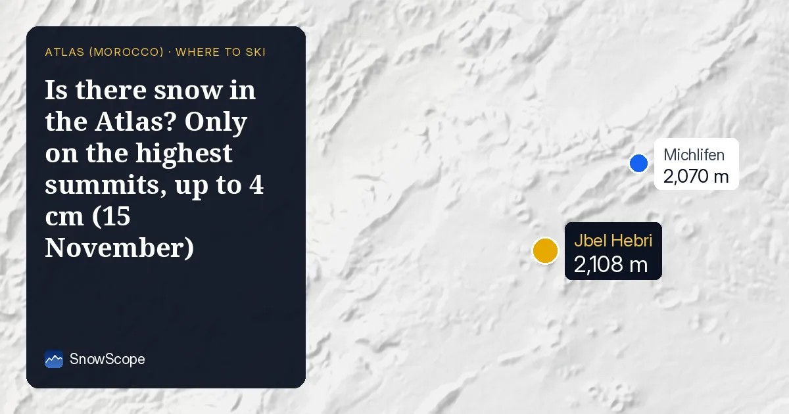
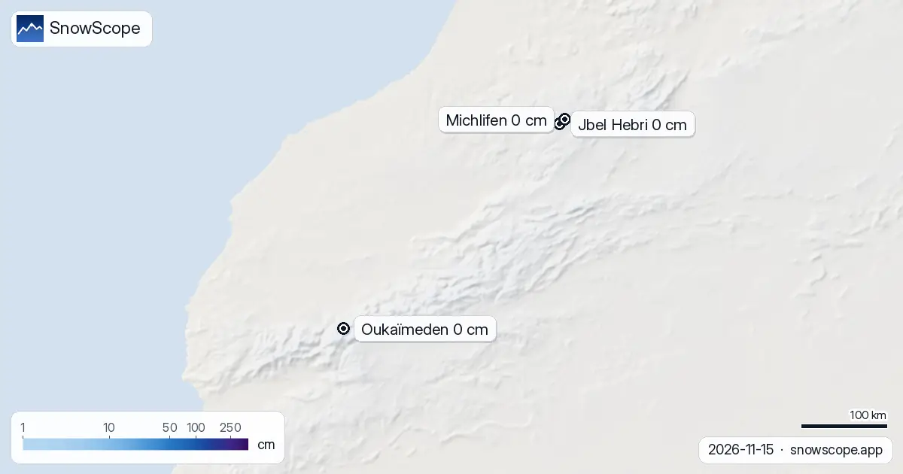

Is there snow in the Atlas? Only on the highest summits, up to 4 cm (15 November)
On 15 November the Moroccan Atlas holds snow only above 3,000 m, covering roughly 20 km² of ground with up to 4 cm depth. All three ski resorts—Jbel Hebri, Michlifen, and Oukaïmeden—lie bare on their slopes today, and the forecast adds no snow to change that through 18 November.
See the live snow forecast for Jbel Hebri in the SnowScope appSnow depth, powder alerts and the 3D map, free.
The shape of an early Atlas winter
An empty start is normal here. At 2,028 m near Jbel Hebri, past winters show 0 cm of snow is typical for mid-November. At 1,970 m near Michlifen, the usual depth on this date is also 0 cm. The Atlas mountains build their snow pack slowly, often late into the season.
What matters now is the trend. The snow cover shrank from 30 km² on 13 November to 20 km² today—a loss of one-third in two days. By 18 November the forecast holds it steady at 20 km², which means no new fall but also no large-scale melt.
| Resort | Snow depth | New snow, 72 h | Coming, next days | Top |
|---|---|---|---|---|
| Jbel Hebri | 0 cm | 0 cm | 0 cm | 2,108 m |
| Michlifen | 0 cm | 0 cm | 0 cm | 2,070 m |
| Oukaïmeden | 0 cm | 0 cm | 0 cm | 3,258 m |

Why the resorts have no snow yet
Jbel Hebri rises to 2,108 m but holds 0 cm on its slopes. Michlifen, also low for the region at 2,070 m, sits equally bare. Oukaïmeden reaches 3,258 m—1,150 m higher—yet even it shows no snow on its slopes today.
The snow that does lie (the 4 cm on the high summits) sits above all three resorts. Snow at that altitude comes only from rare, cold storms that push precipitation high enough to stay frozen. Warm fronts in November bring snow to the peaks but rain to the ski grounds.
What the freezing level tells you
The freezing level (the height where air temperature hits 0°C) is the key to understanding Atlas snow in autumn. On 15 November it sits between 3,900 m and 4,120 m across the region. That is well above the highest resort.
By 18 November, the freezing level rises further: 4,870 m to 4,950 m at Jbel Hebri. Any precipitation that reaches the ski slopes will fall as rain or wet snow, not dry powder. Rain on existing snow speeds up the melt, so the small store on the high summits will shrink, not grow.
The view from the high ground
Oukaïmeden, the highest of the three, has a slight advantage: its top reaches 3,258 m, still below the 15 November freezing level, but closer. In a cold storm, it would catch snow first. Jbel Hebri and Michlifen, both below 2,110 m, are too low to benefit unless a winter front brings bitter cold that pushes the freezing level far down.
The snow map shows 20 km² of coverage on high ground today. That ground is likely bare rock and tundra terrain, not ski terrain. Skiers looking at this data should not imagine snow awaits anywhere on the slopes.
What comes next
The forecast through 18 November adds no snow to any resort. The snow-covered area stays at 20 km², meaning the existing high-altitude store neither grows nor collapses. This is a holding pattern.
Early forecasts can change within days. If a cold, moist system moves in sooner than expected, the picture could shift fast. If a warm ridge settles over the region, what little snow sits on the summits will melt downward.
Planning a trip in mid-November
If you are thinking of visiting the Atlas in the next few days, do not expect snow on the pistes. Check the resort websites for opening dates and lift status; snow on the SnowScope map does not mean a ski area is running. Some Atlas resorts open late, sometimes not until January.
If snow does come to the slopes later this season, early falls are often thin and patchy. Rocks and grass hide just beneath. Stick to groomed runs and official terrain when snow is fresh and scarce.
Tips for skiers
- Check resort websites for lift opening dates. Snow on the high summits does not mean the ski areas are open.
- Early-season snow in the Atlas is thin and breaks easily. Avoid off-piste terrain until the snow pack builds deeper.
- The freezing level on 15 November sits between 3,900 m and 4,120 m—above all ski resorts. Precipitation falls as rain on the slopes.
- Use the SnowScope app to get a powder alert for Oukaïmeden, Jbel Hebri, and Michlifen. A cold storm can change the picture within days.
- Forecasts a few days ahead can shift. Check the map again before you travel.
About these numbers
Resort snow depths are the deepest snow on the resort's upper slopes on the date shown; they are estimates for an area, not a measurement at one point. Forecasts can change. Always read the official avalanche bulletin before going off-piste.
Cite this report
For research, teaching or the press: the numbers and charts are free to reuse under CC BY 4.0 with this citation.
SnowScope (2026), Is there snow in the Atlas? Only on the highest summits, up to 4 cm (15 November), https://snowscope.app/blog/en/2026/11/atlas-morocco-atlas-snow-check-15-november-2026.html, accessed 2026-11-15
SnowScope (Atlas Labs). (2026, November 15). Is there snow in the Atlas? Only on the highest summits, up to 4 cm (15 November). SnowScope snow reports. https://snowscope.app/blog/en/2026/11/atlas-morocco-atlas-snow-check-15-november-2026.html
BibTeX
@misc{snowscope2026atlasmoroccoatlassnowche,
author = {{SnowScope (Atlas Labs)}},
title = {Is there snow in the Atlas? Only on the highest summits, up to 4 cm (15 November)},
year = {2026},
month = nov,
howpublished = {\url{https://snowscope.app/blog/en/2026/11/atlas-morocco-atlas-snow-check-15-november-2026.html}},
note = {Published 2026-11-15 20:24 UTC; accessed 2026-11-15}
}· CC BY 4.0 · Methods, data and tools →
Jbel Hebri: snow and temperature by height, this winter vs last (tools) →
Follow Jbel Hebri
Free: a message when fresh snow is coming, and the forecast every morning.
More snow reports

How low the snow came, when it left, and how this winter compares with 2008-09 and the dry years.

No snow yet at Oukaïmeden on 12 November. The Atlas peaks sit bare; the winter season typically peaks in March with 58 cm at the top.

Oukaïmeden is 50 km from Marrakech. December snow is thin and unpredictable: plan around storms, not the calendar. Data from 13 November 2026.